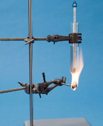
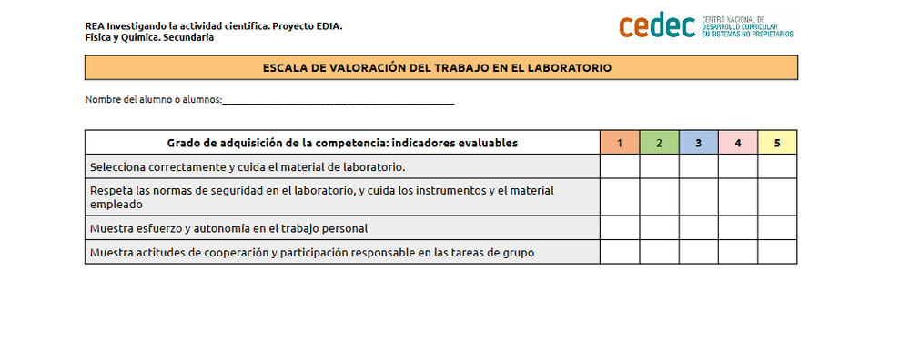
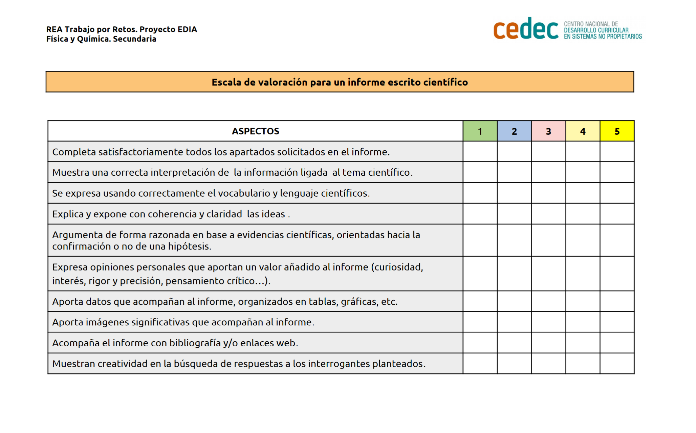
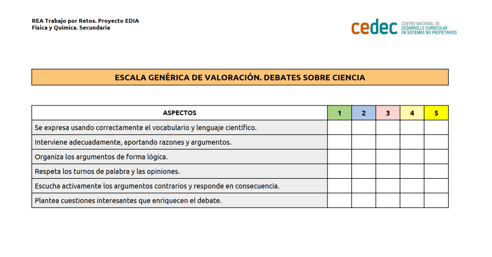

La energía de los alimentos, nuestra “fuerza vital”
Durante siglos se creyó que el calor de los animales-humanos incluidos- era el resultado de una fuerza vital mística, hasta que en el siglo VII empezó a emerger la idea de que la causa era la combustión de los alimentos.
En su “De Homine” (1662), el matemático, filósofo y científico René Descartes parece haber sido el primero en enunciar una teoría correcta, señalando que el cambio que se producía en la comida en el estómago era como el que se producía al verter agua sobre cal.
Pero no fue hasta 1780 cuando Antoine Lavoisier, siempre asistido en sus experimentos por su esposa, Marie-Anne Pierrette, en su “Memoria sobre el calor”, enunció la teoría que es esencialmente la misma que tenemos en la actualidad. El matrimonio Lavoisier es considerado como el padre y la madre de la química moderna.

Vamos a emular a estos grandes científicos y científicas, experimentando con alimentos y calculando sus valores energéticos.
Investigamos las calorias de los alimentos
- Duración:
- Dos sesiones
- Agrupamiento:
- Pequeño y gran grupo
Vamos a calcular experimentalmente las calorías de diferentes alimentos y al final realizaremos un informe del experimento realizado, cotejaremos resultados y concluiremos con un debate sobre los resultados obtenidos.
La actividad experimental la realizaremos por grupos, y, el debate final, lo realizaremos en el grupo de clase.
Vamos a empezar con la siguiente información:
Los alimentos nos proporcionan la energía necesaria para mantener nuestra actividad diaria. Esta energía puede calcularse a través del calor producido por la sustancia alimenticia, que es consecuencia de la oxidación de los nutrientes, y se mide en calorías.

Las necesidades calóricas humanas responden a la necesidad de mantener la temperatura corporal constante, de atender al trabajo de ciertos órganos y glándulas, de crecer en una determinada época de la vida y de reponer el desgaste diario de los tejidos. Por supuesto, estas necesidades varían según la actividad física, el tipo de trabajo, la edad o en situaciones fisiológicas especiales (en el embarazo y la lactancia se incrementa el consumo calórico en 350 y 550 kilocalorías)
¡Empezamos a experimentar!
Experimentando con alimentos
Vamos a ir al laboratorio para analizar el calor producido por varios alimentos. Quemaremos varios alimentos y aprovecharemos el calor que desprenden para calentar agua, medir la diferencia de temperatura del agua en su estado inicial y en su estado final, y de esta forma, calcular su valor calórico.
El valor calórico (Q) se mide indirectamente con la fórmula:
Q = m(agua) c (tf-ti)
- m= masa de agua. Para calcularla hay que saber su densidad= 1g/cm3
- c= calor específico del agua = 1 cal/(g·°C)
- tf y ti= temperaturas final e inicial del agua en ºC
Trabajaremos en grupos, cada grupo con una muestra de alimento. Al finalizar, pondremos los resultados en común y completaremos la tabla. Cada grupo hará un informe final con:
- La hipótesis formulada: ¿Qué alimento es más calórico?
- Descripción del experimento (materiales, procedimiento, variables independiente y dependiente)
- Datos recogidos en la tabla
- Conclusiones
Concluiremos con un debate en el grupo de clase.
¿Qué necesitamos?
Materiales y productos:
- Soportes y pinzas

sciende photo library - Tubos de ensayo
- Aguja enmangada
- Mechero
- Termómetro
- Báscula
- Probeta
- 4 alimentos diferentes en trocitos pequeños( pueden ser frutos secos)
- Tabla de calorías de los alimentos.
- Tabla de calorías de fruto secos y semillas
¿Cómo lo hacemos?
Antes de realizar el experimento formulamos nuestra hipótesis:
Procedimiento:
- Hacemos el montaje de la fotografía (imagen: sciende photo library) y vamos anotando los datos en la tabla.
- Pesamos una pequeña cantidad del alimento que vayamos a quemar (frutos secos: pistachos, nueces, cacahuetes...).
- Colocamos el alimento en una aguja enmangada y lo sujetamos mediante la pinza en el soporte.
- Ponemos una cantidad de agua en el tubo de ensayo y medimos su temperatura con un termómetro que introduciremos en su interior.
- Quemamos el trocito de alimento con un mechero y lo dejamos arder hasta que se apague la llama.
- Anotamos el aumento de temperatura que ha sufrido el agua.
- Esperamos a que se enfríen los restos de alimento y volvemos a pesarlo.
- Aplicamos la fórmula para transformar la variación de temperatura en calorías
{kind=link}
Recogiendo datos
Cada grupo expone los resultados obtenidos y, entre todos, completamos la tabla:
|
Muestras |
Masa inicial de alimento (g) |
Masa de agua (g) |
Temperatura inicial del agua (ºC) |
Temperatura final del agua(ºC) |
Masa final de alimento (g) |
Calorías |
| Muestra 1 | ||||||
| Muestra 2 | ||||||
| Muestra 3 | ||||||
| Muestra 4 |
- Recordamos para calcular el valor calórico: Q = m(agua) c (tf-ti),
- Realizamos nuestro informe.
- Comparamos los datos con las tablas calóricas y obtenemos conclusiones.
Conclusiones y debate
En grupo establecemos nuestras conclusiones, comparando los valores obtenidos con nuestras hipótesis, con los valores que aparecen en las tablas y con las dificultades encontradas:
*Recordamos que para comparar las calorías calculadas con las que aparecen en las tablas (por 100g de alimento) hay que referirlas a la misma cantidad de alimento.
Realizamos el debate, para ello tenemos en cuenta las siguientes cuestiones:
- ¿Se ha cumplido nuestra hipótesis?
- Los resultados de nuestro experimento, ¿son similares a los valores de las tablas calórica?
- En caso de que no sean similares ¿Por qué puede ser?
- ¿Podemos hacer un “ranking” calórico con los alimentos experimentados?
- ¿Qué dificultades hemos tenido?
Evaluación y reflexión
Una vez que hemos finalizado la tarea, es un buen momento para reflexionar en nuestro diario de aprendizaje. Algunas sugerencias pueden ser:
- ¿Qué he aprendido?
- ¿Qué me ha sorprendido más de todo el proceso? ¿Por qué?
- ¿He cambiado alguna idea previa? ¿Cuál?
- ¿Qué me ha resultado más difícil? ¿Por qué?
Evaluación
Utilizaremos las siguientes escalas de valoración:
1.-Escala de valoración para un trabajo de laboratorio (descargar en formato editable, odt, y pdf)

2.-Escala de valoración para un informe escrito científico (descargar en formato editable odt y pdf)

3.-Escala de valoración para participar en un debate científico (descargar en formato editable odt y pdf)
